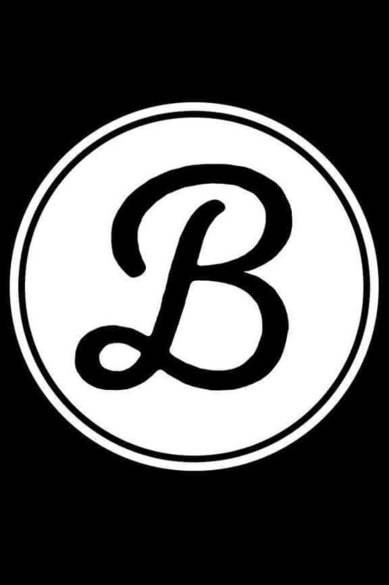
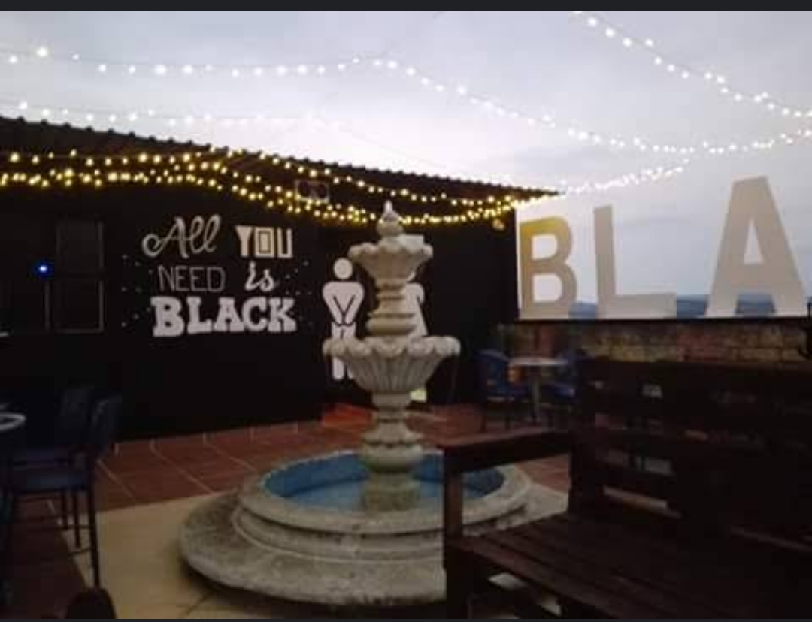
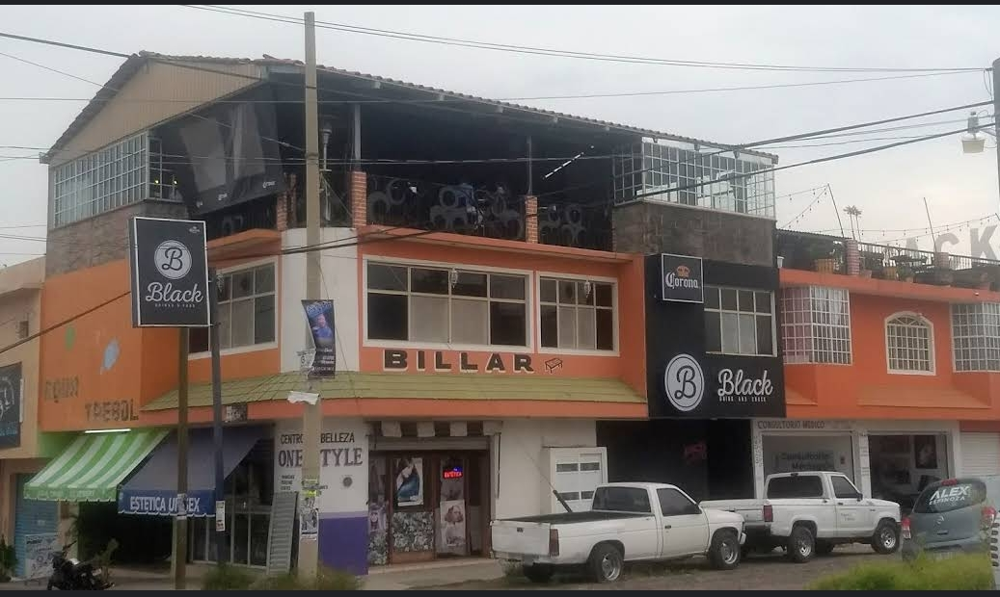
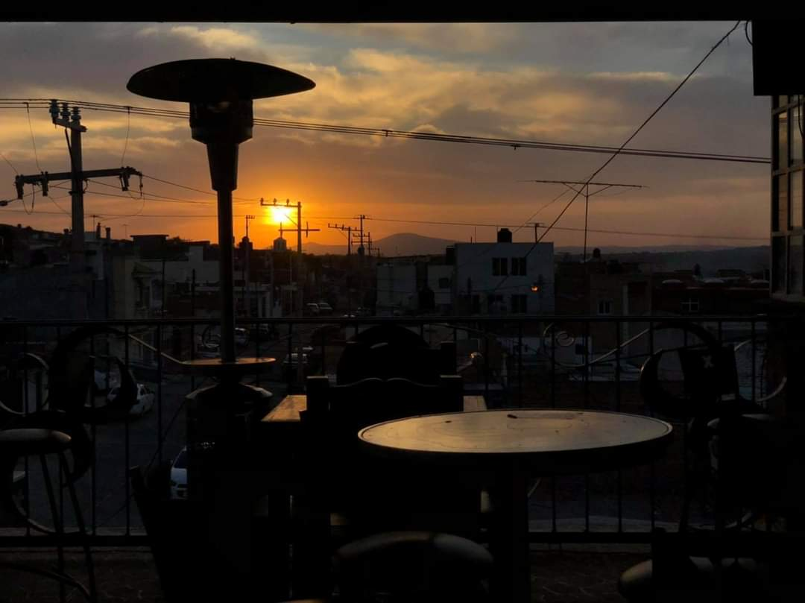

Black
Black pub lo, ubicado en Calle Escorpión, Cd del Sol, La Piedad de Cavadas, Mich. Es un bar ubicado en el último piso del edificio, con terraza y mesas al aire libre, tiene variedad de bebidas y comida a un precio accesible, justo en la planta baja del edificio se encuentra un billar para también poder pasar el tiempo jugando y tomando.

Cuenta con variación de bebidas y con bartender para la elaboración de bebidas especiales de la Carta de coctelería, cuenta con excelente servicio a clientes y estacionamiento incluido al kfc.

En segundo lugar, el Exo nos permite seleccionar 8 habilidades especiales, que tienen un uso limitado. Entre estas "cartas en la manga" encontramos camuflaje óptico, un escudo desplegable, un extra de resistencia... que pueden salvarnos el pellejo en el último momento y que tenemos que aprender a utilizar en momentos clave de la partida, como ocurre con las granadas o las ventajas por racha. Pero en el resto, se mantiene la esencia de la saga.
MAPA

